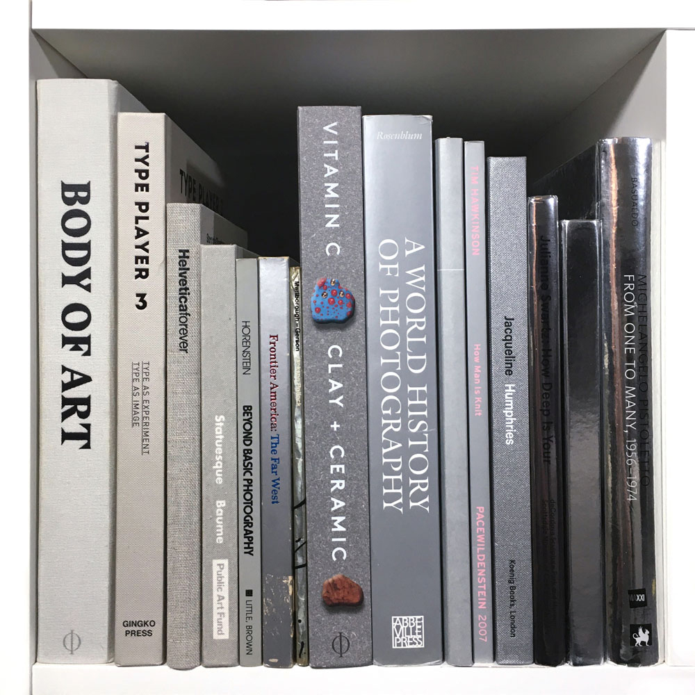

- BODY OF ART
Phaidon Press, London, 2015
- TYPE PLAYER 3: TYPE AS EXPERIMENT, TYPE AS IMAGE
Ginko Press, Berkeley, 2015
- HELVETICA FOREVER: STORY OF A TYPEFACE
Axel Langer, Indra Kupferschmid
Lars Müller, 2009
- STATUESQUE
Nicholas Baume, Nasher Sculpture Center
Public Art Fund, New York, 2011
- BEYOND BASIC PHOTOGRAPHY: A TECHNICAL MANUAL
Henry Horenstein
Little, Brown, Boston, 1977
- FRONTIER AMERICA: THE FAR WEST
Museum of Fine Arts
New York Graphic Society, 1975
- JACKSON POLLOCK
Jackson Pollock, Marlborough-Gerson Gallery
Marlborough-Gerson Gallery Incorporated, 1964
- VITAMIN C: CLAY AND CERAMIC IN CONTEMPORARY ART
Clare Lilley
Phaidon Press, London, 2017
- A WORLD HISTORY OF PHOTOGRAPHY
Naomi Rosenblum
Abbeville Press Publishers, New York, 2007
- DRAWING PAPERS (various)
The Drawing Center, 2004
- HOW MAN IS KNIT
Tim Hawkinson
PaceWIldenstein, 2007
- JACQUELINE HUMPHRIES
Jacqueline Humphries, D. Joselit, A.Cook, S. Hudson
Koenig, 2014
- JULIANNE SWARTZ: HOW DEEP IS YOUR
Rachael Arauz, Cassandra Coblentz
deCordova Sculpture Park and Museum +
Scottsdale Museum of Contemporary Art, 2012
- PAVED WITH GOOD INTENTIONS
Ron Arad
Friedman Benda, 2007
- MICHELANGELO PISTOLETTO:
FROM ONE TO MANY, 1956-1974
M. Pistoletto, J. Chevrier, L. Lonardelli, M. Farano
Philadelphia Museum of Art, 2010
